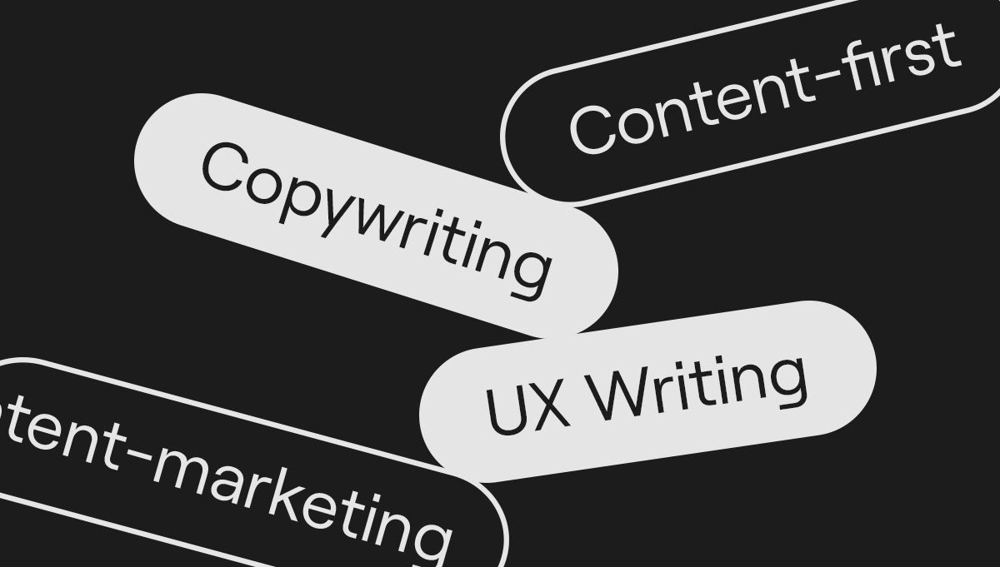
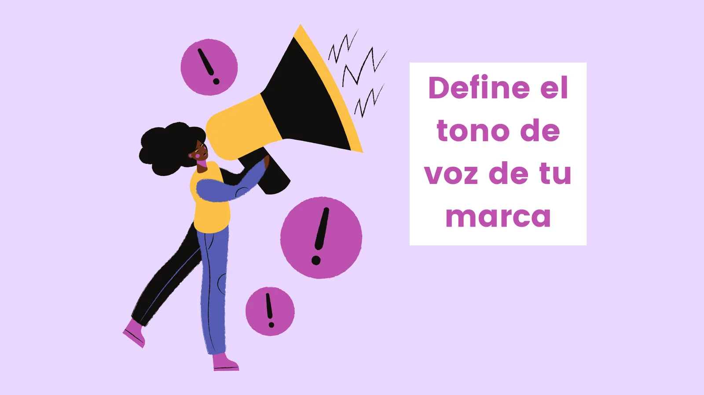
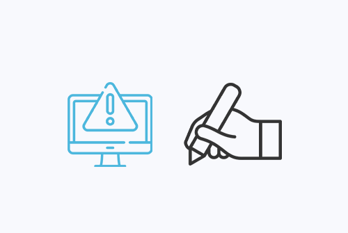
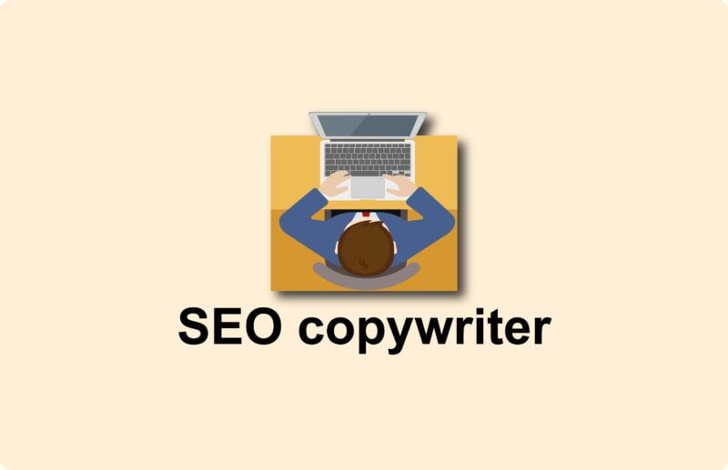
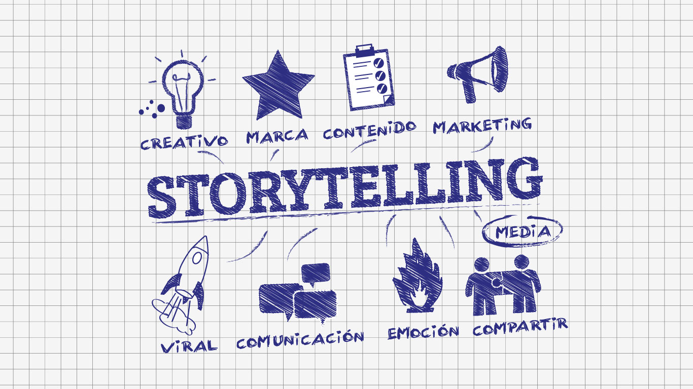

El copywriting es el arte de escribir textos persuasivos, generalmente con el objetivo de generar una acción del lector, como comprar un producto, suscribirse a un servicio o simplemente interactuar con un contenido. En el diseño web, el copywriting es esencial porque los textos ayudan a guiar al usuario por el sitio web, le informan, generan confianza y motivan acciones concretas, como completar un formulario o realizar una compra. Sin un buen copy, el diseño de la web puede perder impacto, ya que los usuarios no entenderán o no se sentirán motivados a interactuar con la página.
* Copywriting: Su objetivo principal es persuadir, generar interés y promover una acción (como comprar, registrarse, suscribirse, etc.). El copywriter se enfoca en la venta, el marketing y la conversión.
* UX Writing: Se centra en la creación de textos claros y útiles para mejorar la experiencia del usuario en la interfaz de una página web o aplicación. El UX writing está más relacionado con la usabilidad, el diseño de interacción y la facilidad de comprensión. Los textos no buscan persuadir directamente, sino guiar al usuario de manera intuitiva y sin confusión.
El tono y la voz de la marca son cruciales porque reflejan la personalidad de la empresa o producto. El tono puede ser formal, informal, amistoso, serio, etc., y debe adaptarse a la audiencia. La voz es la "personalidad" consistente que tiene la marca a lo largo de todos sus canales, mientras que el tono puede variar según el contexto. Un tono y una voz coherentes generan confianza, cercanía y mejoran la percepción del usuario, lo cual influye directamente en su experiencia y acción dentro del sitio.
* Llamadas a la acción claras: Usar frases como “Compra ahora”, “Regístrate para obtener un descuento”, o “Descarga gratis” hace que el usuario sepa exactamente qué acción tomar.
* Urgencia y escasez: Frases como “Oferta limitada” o “Solo quedan 5 unidades” pueden generar un sentido de urgencia.
* Beneficios antes que características: En lugar de solo enumerar las características del producto, enfócate en cómo beneficiarán al usuario.
* Pruebas sociales: Incluir testimonios, estudios de caso o reseñas puede aumentar la credibilidad y la conversión.
* Claridad y simplicidad: Usa un lenguaje directo y fácil de entender. Evita jergas y palabras complicadas.
* Usar jerarquías claras: Títulos, subtítulos y párrafos bien definidos ayudan a que el usuario se enfoque en lo más importante.
* Espacios en blanco: Deja suficiente espacio entre el texto y otros elementos visuales para evitar que la página se vea abarrotada.
* Diseño responsive: Asegúrate de que el diseño se adapte a diferentes tamaños de pantalla sin comprometer la legibilidad.
* Imágenes que complementen el texto: Utiliza imágenes o íconos que ayuden a visualizar lo que estás comunicando, pero no las uses como relleno.
* Texto excesivo: Evita escribir demasiado. Los usuarios escanean, no leen todo, así que usa frases cortas y al grano.
* Falta de llamadas a la acción: Si no dices explícitamente lo que quieres que el usuario haga, no lo hará.
* Lenguaje complicado: Usa un lenguaje simple y directo, sin jerga innecesaria.
* No conocer al público: Asegúrate de que el copy resuene con tu audiencia. Usa un tono adecuado para ellos.
* No enfocarse en los beneficios: Hablar solo de las características de un producto sin explicar cómo beneficiará al usuario puede reducir la conversión.
* Palabras clave relevantes: Usa palabras clave relacionadas con tu producto o servicio, pero sin sobrecargar el texto. La naturalidad es esencial.
* Encabezados estructurados: Utiliza etiquetas de encabezado (H1, H2, etc.) que ayuden tanto al SEO como a la estructura del contenido.
* Texto optimizado para la intención de búsqueda: Escribe de manera que satisfagas las necesidades del usuario, respondiendo sus preguntas e intereses.
* Texto claro y fluido: No sacrifiques la claridad por intentar meter muchas palabras clave. La experiencia del usuario sigue siendo lo más importante.
El storytelling (narración de historias) en el copywriting ayuda a conectar emocionalmente con los usuarios. Contar una historia puede hacer que tu marca sea más memorable, generar empatía y convertir a los visitantes en clientes. Puedes usarlo para compartir la historia detrás de tu empresa, mostrar cómo tu producto o servicio ha cambiado vidas o explicar cómo los usuarios pueden sentirse identificados con la misión de la marca.
* Móvil: El texto debe ser conciso y directo. Evita párrafos largos y asegúrate de que los botones y llamadas a la acción sean fáciles de tocar.
* Desktop: Tienes más espacio para ofrecer detalles, pero sigue siendo importante ser claro y no sobrecargar la página con información innecesaria.
* Adaptar el diseño: Asegúrate de que los elementos visuales y el texto se adapten de manera fluida en cualquier dispositivo. Usa tipografías legibles y botones visibles.
* Grammarly: Herramienta para corregir errores gramaticales y mejorar la escritura.
* Hemingway Editor: Permite simplificar el texto y hacerlo más comprensible.
* CoSchedule Headline Analyzer: Ayuda a crear titulares que llamen la atención.
* Google Analytics: Para analizar cómo los usuarios interactúan con tu sitio y ajustar el contenido en consecuencia.
* Yoast SEO: Para asegurarte de que el contenido está optimizado para motores de búsqueda sin sacrificar la legibilidad.